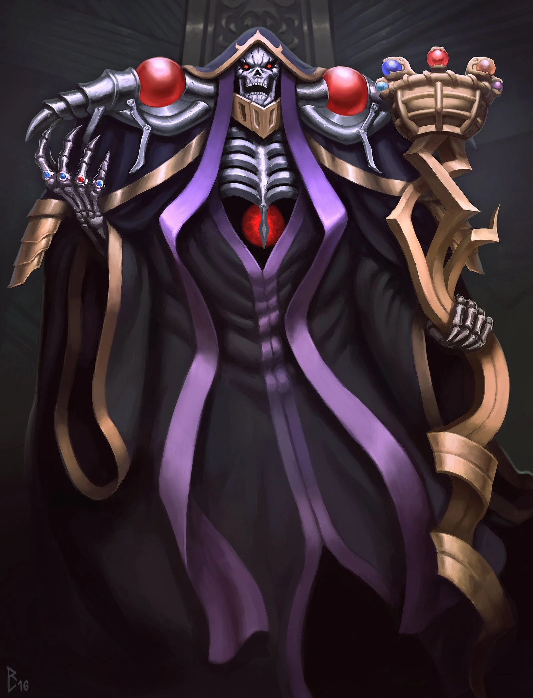

|  | BIOGRAFIA |
|---|---|
|
Ainz Ooal Gown, originalmente Satoru Suzuki, é um assalariado japonês transportado para um mundo de fantasia no corpo de seu avatar de MMORPG - um esqueleto mago lich de poder supremo. Agora governante absoluto do Grande Túmulo de Nazarick e seus NPCs leais que ganharam vida, Ainz navega este novo mundo tentando descobrir se outros jogadores também foram transportados, enquanto expande seu domínio. Apesar de sua aparência aterrorizante e poder divino, internamente ainda mantém sua humanidade conflitante, forçado a agir como o mestre supremo e implacável que seus subordinados esperam. | |
| ARMAS | |
|
Cajado de Ainz Ooal Gown: Arma suprema da guilda, incorporando poder mágico incomparável e servindo como símbolo de sua autoridade. Itens Divinos: Possui dezenas de itens mágicos de nível máximo, cada um com poderes devastadores próprios. | |
| Habilidades | |
|
Magia de Necromancia Suprema: Controle absoluto sobre morte e mortos-vivos, invocando exércitos de criaturas macabras. Grasp Heart: Esmaga o coração do alvo instantaneamente, matando a maioria dos seres vivos com um gesto. The Goal of All Life is Death: Amplifica magias de morte para ignorar qualquer resistência ou imunidade, garantindo morte absoluta. |